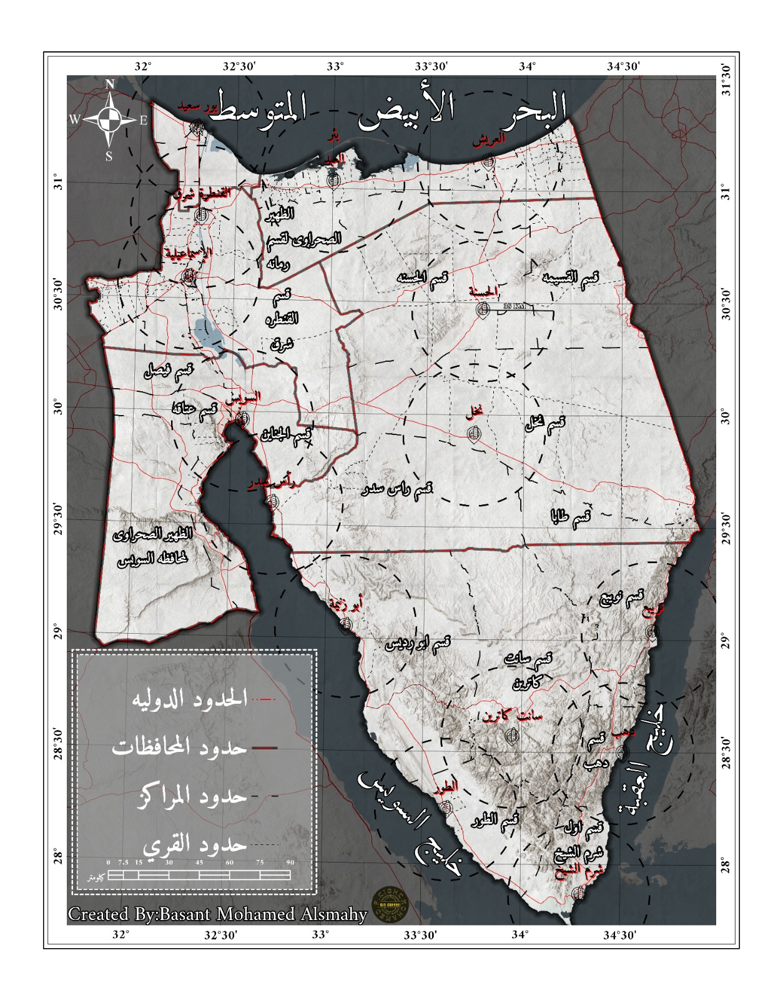
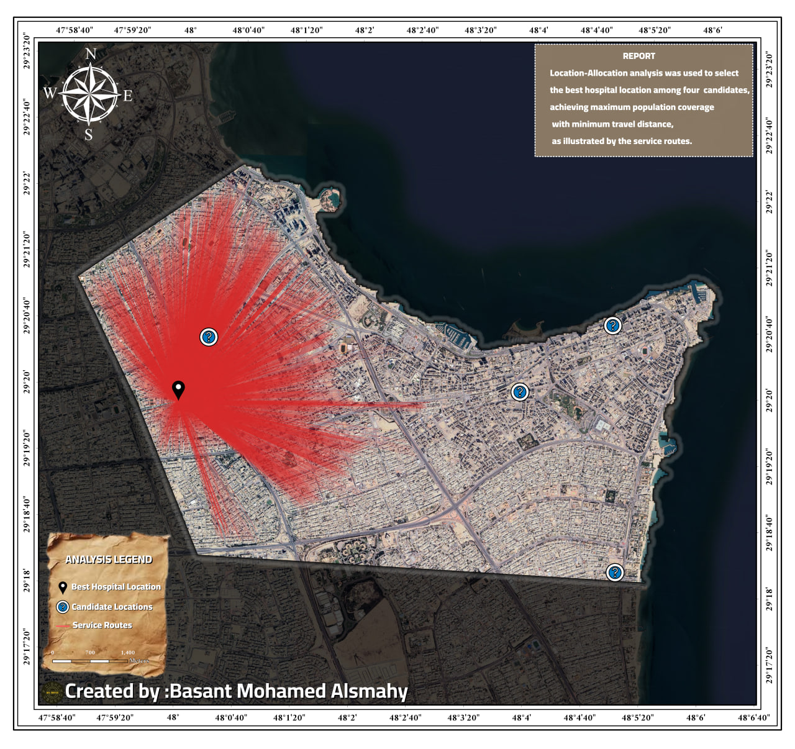
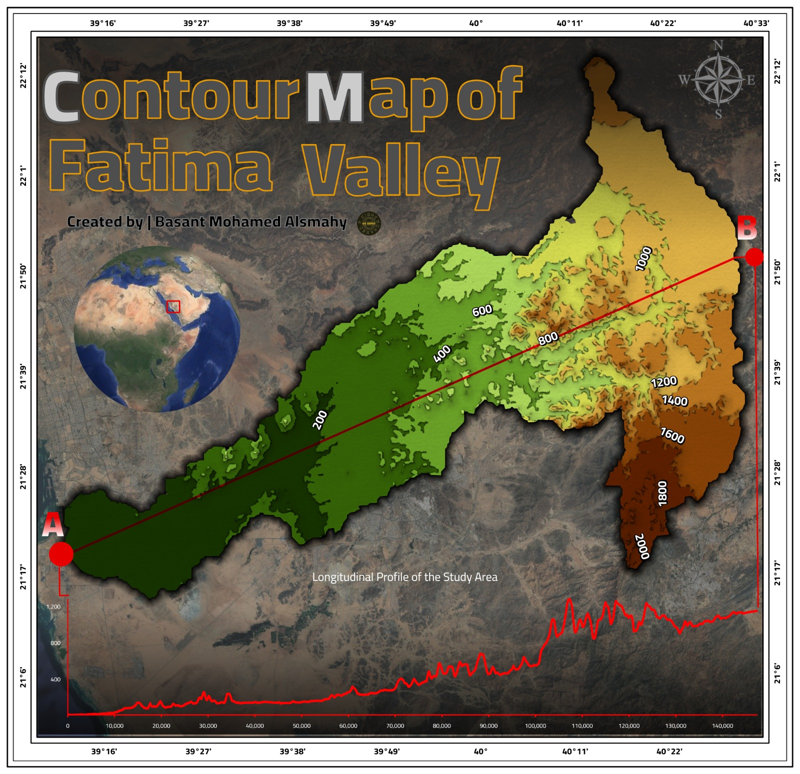
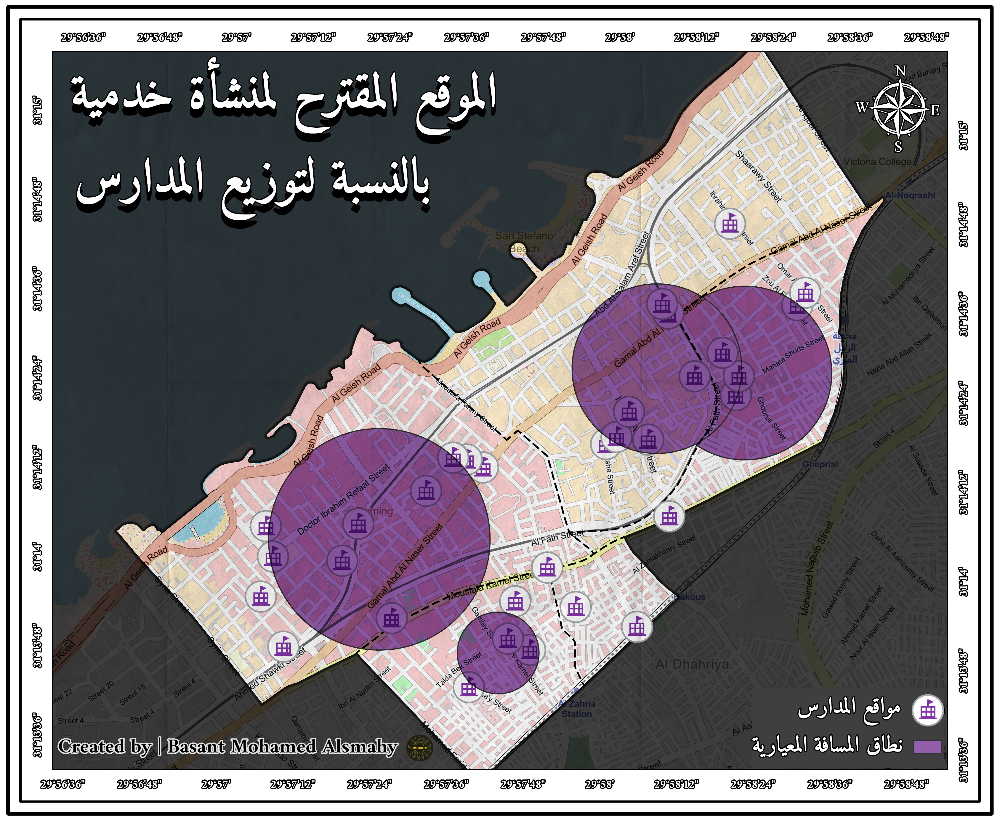

Featured GIS Projects

Spatial Database Design
3 MapsAdministrative mapping, geodatabase organization, topology validation and cartographic design.

Utility Network & Transportation Analysis
4 MapsRoute optimization, closest facility, service area and location-allocation analysis.

Terrain & Topographic Analysis
5 MapsContour mapping, slope analysis, aspect modeling and elevation assessment.

Hydrological & Suitability Analysis
3 MapsValley analysis, hydrological modeling and dam site suitability assessment.

Military & Visibility Analysis
2 MapsStrategic terrain evaluation, viewshed analysis and observation planning.

Spatial Statistics & Site Selection
5 MapsMedian center analysis, directional distribution and optimal facility location studies.